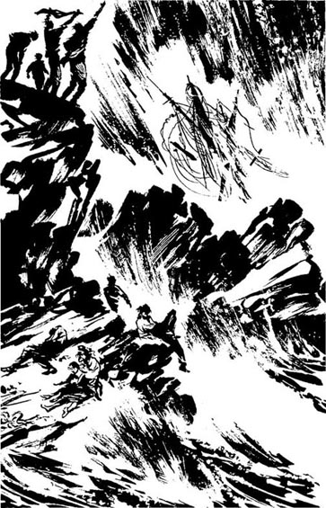

第七章: 哈克礁上 On Harker's Rock
1 / 2
There were twelve people on Harker's Rock. Daniel Donovan was with Mrs Dawson and her children, and there were eight other people near them. The wreck of the For farshire was behind them, between them and the lighthouse.
查看中文翻译
They were nearly dead with wet and cold. Every two minutes, white water fell on them. Daniel had lost his coat, and the wind cut through his thin shirt like a knife. His hands and legs were red with blood. Mrs Dawson was crying and sat with her arms around her two small children. Mr Robb prayed in a loud voice without stopping. Thomas Buchanan and the other men sat together, too cold to move. One man had a broken leg.
查看中文翻译
The waves got bigger, and the people on the rock moved closer together. After half an hour Mr Robb, the churchman, stopped praying. Daniel looked at him. He was lying on the rock, his face white and cold. His eyes were open, but he did not see Daniel's hand in front of his face. He was dead.
查看中文翻译
"We'll all be dead soon," shouted Thomas Buchanan angrily. "No man can live long here, in this wind."
查看中文翻译
第七章: 哈克礁上 On Harker's Rock
2 / 2
The lighthouse! Daniel remembered it suddenly. "We must wave to it!" he shouted. "They can't see us here! Come up onto the top of the rock! Wave to them!"
查看中文翻译

"Why don't they come from the lighthouse to save us?" shouted James Kelly.
查看中文翻译
The wind was very strong there, so it was difficult to stand. They held onto the rock and shouted and waved at the lighthouse as hard as they could.
查看中文翻译
Daniel and James Kelly climbed to the top of the rock, but at first the others did not move -- they were too cold, too tired, too frightened. Thomas Buchanan had to hit them and push them to the top of the rock.
查看中文翻译
No one answered. Behind the wild sea and the rain, the lighthouse stood still and quiet. A few minutes later, the light stopped flashing. But they saw nobody. One by one, the men came down from the top of the rock, and sat with their arms around each other, out of the wind. Only Daniel and Thomas Buchanan stayed on top of the rock. They waved and shouted and cried, but they saw no one. Their faces were as cold as death, and salty and wet from the sea.
查看中文翻译